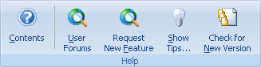
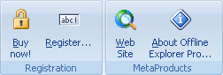

Используйте вкладку Справка для доступа к системе помощи, web-сайту компании, Советам дня и диалогу О программе.

Содержание - Открывает содержание справки.
Обсуждения на Web-сайте - Открывает страницу форума для обсуждения программ и получения помощи от других людей.
Запрос новой возможности - Открывает страницу для описания проблемы или запроса нужной новой функциональности.
Советы - Показывает диалоговое окно с советами.
Проверка новой версии - Контакт с web-сайтом для проверки доступности новой версии программы.

Купить! - Открывает онлайн-страницу для покупки Offline Explorer Pro.
Регистрация - Открывает диалог для ввода регистрационного кода.
Сайт Интернет - Открывает web-сайт MetaProducts corp.
О программе - Показывает информацию об авторских правах, версии, истории изменений и лицензии для Offline Explorer Pro. Также позволяет вам зарегистрировать вашу копию Offline Explorer Pro.